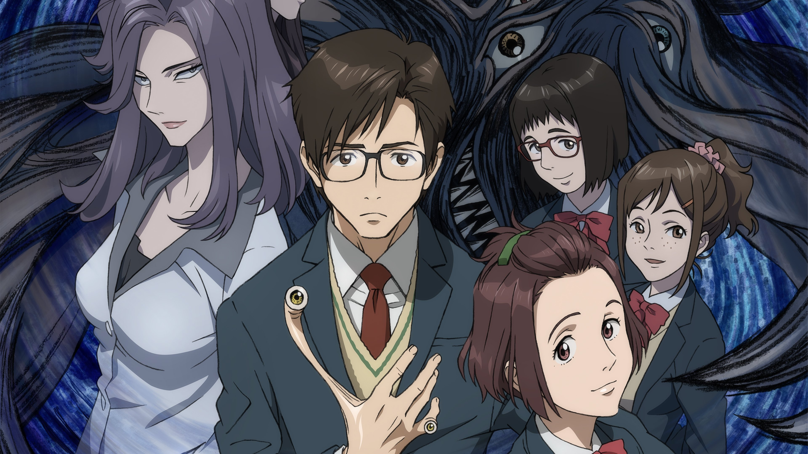

Anime

Lien de l'anime : Parasite
Genres : Action, Drame, Horreur, Psychologique, Sci-fi, Romance
Nombre d'épisodes : 24
Nombre de saisons : 1
Statut : Terminé
Date de diffusion : 2014
Opening : 10/10
Ending : 9/10
Date de la critique : 18 août 2026
Note de l'anime
Texte de la note.
Synopsis
Depuis des milliers d'années, l'Homme se trouve au sommet de la chaîne alimentaire. Jusqu'à ce jour où de mystérieuses sphères, abritant d'étranges parasites, se répandent un peu partout sur Terre. Rapidement, les entités prennent possession de certains habitants. Nul ne sait d'où elles viennent, mais ce qui semble certain, c'est qu'elles sont là pour débarrasser le monde de l'espèce humaine. Shinichi, jeune lycéen, est un « hôte » dont le cerveau a miraculeusement été épargné : et pour cause, Migi, son parasite, a pris possession de son bras droit ! Ce cas exceptionnel va déboucher sur une singulière cohabitation. Car au-delà de la fusion physique opérée entre Migi et Shinichi, qui partagent désormais le même corps et la même vie, va se développer un lien d'attachement particulier où les deux êtres vont apprendre chacun l'un de l'autre. Alors que Shinichi se découvre doté d'incroyables facultés physiques, il prend aussi conscience de la menace qui plane sur ses proches... et sur l'humanité tout entière.